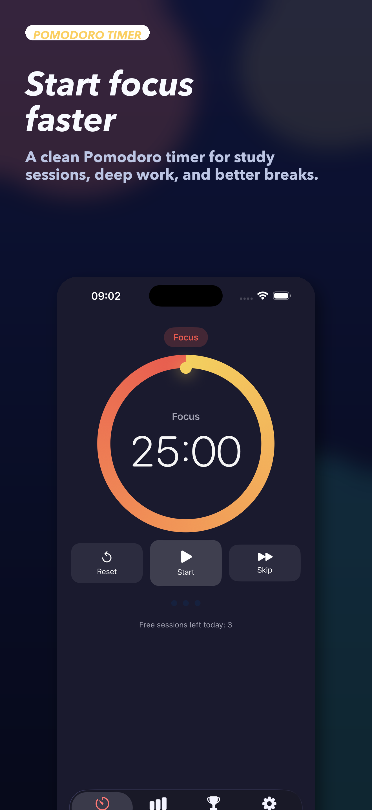
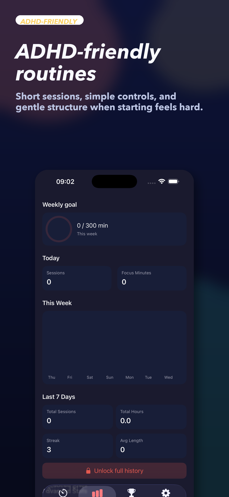
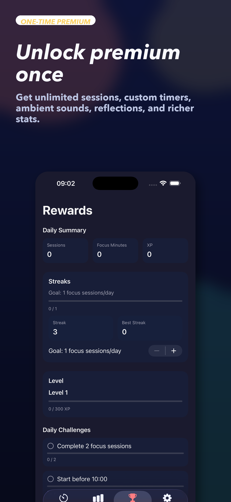
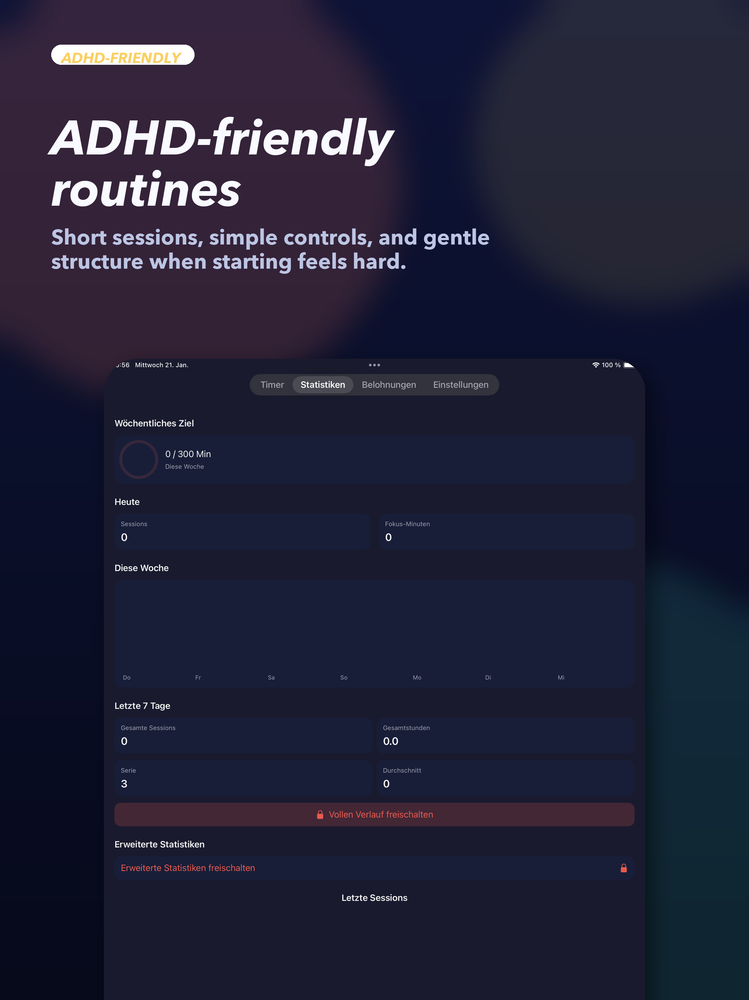

Built for follow-through
Start a session before motivation slips.
Large timers, clear breaks, and simple controls reduce friction when getting started feels harder than it should.
RidgeFocus helps you start study sessions, stay on task, and build momentum with simple routines, smart breaks, widgets, and a one-time premium unlock.
Large timers, clear breaks, and simple controls reduce friction when getting started feels harder than it should.
Daily wins, weekly progress, and focus stats give you proof that your routine is working.
Custom timers, ambient sounds, advanced stats, reflections, and widgets are available with a one-time premium purchase.




If you need help with RidgeFocus, reach out and we will reply as soon as possible.
App: RidgeFocus
Effective date: 01/19/26
RidgeFocus is designed to work without accounts and without collecting personal information. Your timer settings and focus stats are stored on your device so the app and widget can function.
We do not collect personal information such as your name, email address, phone number, contacts, photos, or location.
We do not run third-party ads and we do not sell your data.
To provide core features, RidgeFocus stores the following locally on your device:
This information is stored using on-device storage (such as UserDefaults / App Group storage) so the app and the Lock Screen widget can stay in sync. This data does not leave your device.
If you enable notifications, RidgeFocus schedules local notifications on your device to alert you when focus or break sessions end.
If you enable calendar sync, RidgeFocus can add focus session events to your personal calendar. This happens only on your device and can be turned off at any time in Settings.
Depending on your iOS settings, your device may back up app data to iCloud as part of normal device backups. If you choose to enable iCloud sync in the app settings, RidgeFocus stores your focus sessions (including notes and ratings), reminders, and settings in your iCloud account using Apple's CloudKit so they stay in sync across devices. This is controlled by Apple and your device settings. RidgeFocus does not upload your app data to our servers.
In-app purchases are processed by Apple. RidgeFocus does not receive your payment details.
If you have enabled iOS options like "Share With App Developers", Apple may provide us with limited crash or performance diagnostics to help improve app stability. These diagnostics are provided by Apple and are not used for advertising.
RidgeFocus does not integrate third-party analytics, advertising SDKs, or data brokers.
Your data remains on your device until you delete it (for example by uninstalling the app). If the app includes a \"Reset Stats\" option, using it will remove your stored statistics on that device.
RidgeFocus is not intended to collect personal information from children. If you believe a child has provided personal information to us, contact us and we will address it.
If we change this policy, we will update the text in the app and revise the Effective date above.
If you have questions about privacy, contact: mip@gmx.biz